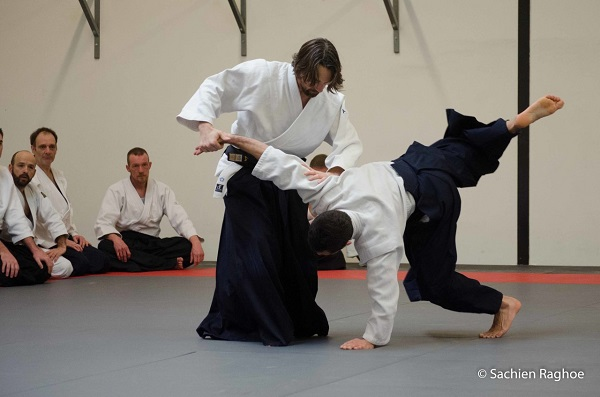
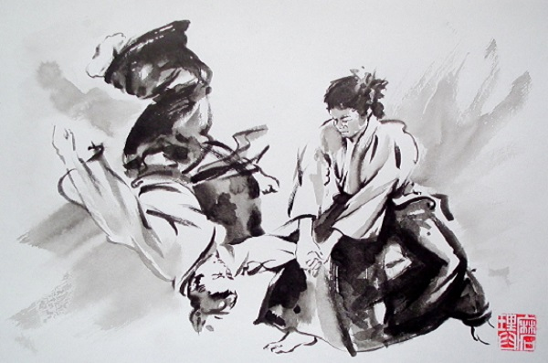
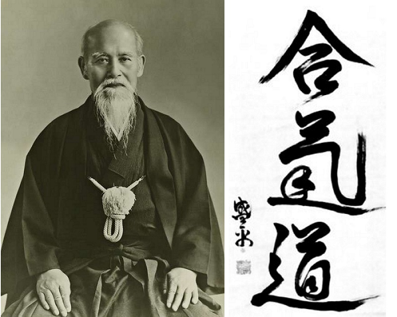

Over mijn hobby
Wat is AiKiDo?
Aikido is een Japanse verdediging sport die in het begin van de 20de eeuw door Morihei Ueshiba ontwikkeld werd. Het word ‘Aikido’ bestaat uit drie termen: Ai is Japans voor "samenkomen, samenbrengen", in aikido dikwijls vertaald als "harmonie". Ki heeft meerdere betekenissen, waaronder: "energie". Do tot slot, betekent: "weg" als in levensweg of morele methode. Het woord Do geeft aan dat de weg die bewandeld wordt (hoe je het aanpakt) belangrijk is, het is gebruikt in vele Japanse disciplines.
Mijn ervaring
Ik begon met Aikido op 2010 in een gymzaal in Numansdorp. Daar ontmoete ik mijn leraar (Sensei) Erwin en veel andere. In aikido zijn er drie verschillende stijlen: Aikikai Aikido, Ki Aikido en Aikijitsu of Aikibudo. Ik deed de stijl Aikibudo. In deze sport heb ik geleerd ik me kan verdedigen en hoe ik op moet gaan met wapens. Ik ben gestopt op 2015 door problemen met school.
  